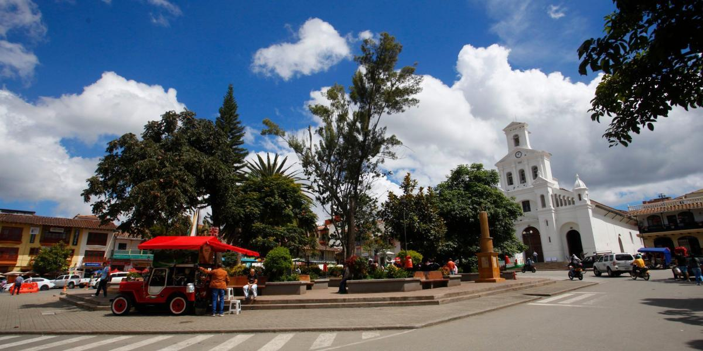

nuestros viajes
la pintada

Este pueblo, también en el departamento de Antioquia, se destaca por su entorno natural impresionante. Rodeado de montañas y ríos, La Pintada ofrece a los visitantes la oportunidad de disfrutar de actividades al aire libre como senderismo, rafting y observación de aves. Además de su belleza natural, el pueblo cuenta con una plaza central encantadora donde los lugareños se reúnen y donde se pueden encontrar productos locales y artesanías. La hospitalidad de sus habitantes y la tranquilidad de su entorno hacen de La Pintada un destino perfecto para aquellos que buscan escapar del bullicio de la ciudad y conectarse con la naturaleza.
santa fe de antioquia

Fundada en 1541, Santa Fe de Antioquia es uno de los pueblos más antiguos de Colombia y fue la capital del departamento de Antioquia hasta 1826. Su centro histórico está lleno de casas coloniales bien conservadas, plazas encantadoras y calles empedradas que transportan a los visitantes a tiempos pasados. La Catedral Metropolitana, la Puente de Occidente (un impresionante puente colgante del siglo XIX) y el Museo Juan del Corral son algunos de los puntos de interés más destacados. Además, la calidez de su clima y la amabilidad de sus habitantes hacen de Santa Fe de Antioquia un destino agradable para los viajeros.
marinilla
Ubicado en el departamento de Antioquia, Colombia, Marinilla es conocido por su arquitectura colonial bien conservada y su ambiente tranquilo. Sus calles empedradas y coloridas casas coloniales crean un encantador escenario para los visitantes. La iglesia principal, la Parroquia de Nuestra Señora de la Asunción, es un destacado ejemplo de la arquitectura religiosa de la región. Además, Marinilla es reconocido por su producción agrícola, especialmente de café, lo que ofrece a los visitantes la oportunidad de disfrutar de auténticos sabores locales.